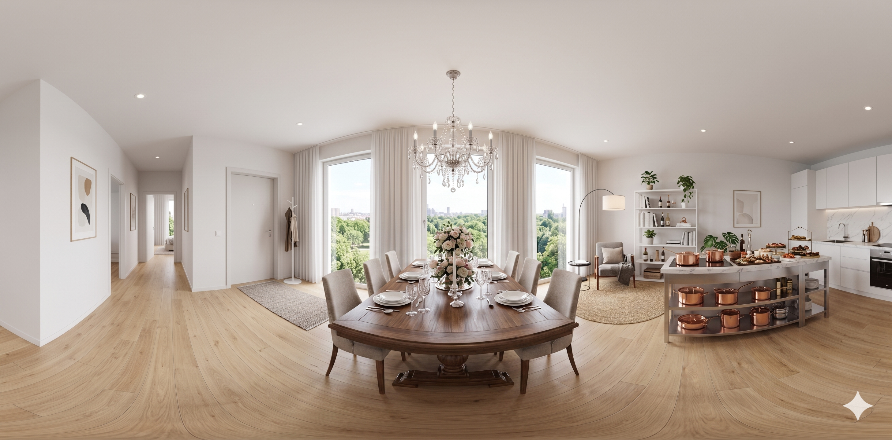
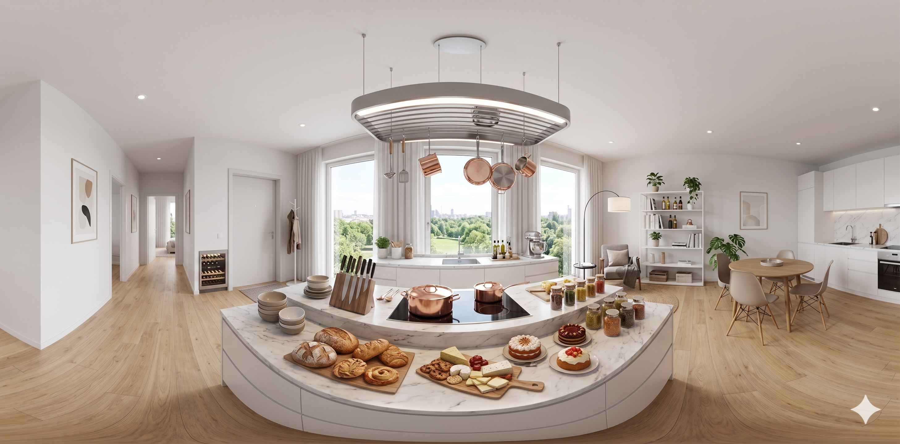
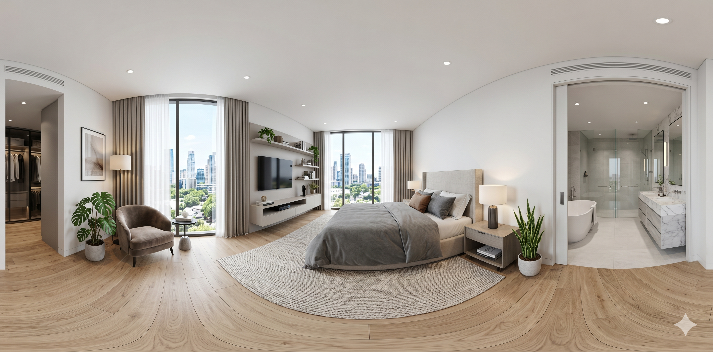

This is the ninth original article on aogl.cn, sourced from original/360-degree-panorama/. The folder is an apartment interior 360° asset pack: four 2:1 equirectangular panoramas plus v360.mp4, a screen recording that walks living room → dining → kitchen → master bedroom. It is not a brokerage landing page and not a vendor tutorial—only how these files are named, exported, and published here.
What is in the folder
Living-room.png— Nordic-style living room, park view through tall windowsdining-room.png— formal dining space with chandelier and long tablekitchen.png— island kitchen, marble counter, copper cookware on displaymaster-bedroom.png— bedroom suite with city skyline glazingv360.mp4— four-room walkthrough recording (embedded below)
Each image is a full 360° horizontal sweep at roughly 2:1 width-to-height—the usual equirectangular layout for panorama textures. If the ratio drifts, you get a visible seam or stretched floor/ceiling bands. I sanity-check left and right edges before committing a file to the repo.
Equirectangular layout and inverted-sphere tours
If you build a draggable WebGL tour, the common Three.js pattern is SphereGeometry plus scale(-1, 1, 1) with the camera at the origin— you stand inside the room and turn your head, not orbit furniture from outside. That rhymes with the site’s interactive 3D Earth (also WebGL + Three.js r128) but the earth is viewed from outside with lights; interior panoramas often use MeshBasicMaterial and one texture map so baked lighting in the photo is not washed out.
aogl.cn now ships stills plus the MP4 only—no hosted interactive shell. The video still shows how the spaces connect; the PNGs are there when you need a frozen frame or filename reference.
Tour recording (v360.mp4)
The clip is lighter on first paint than booting a WebGL viewer—good for article embeds. Pause and scrub when you want to check exposure or seam alignment room by room.
v360.mp4 — living, dining, kitchen, master bedroom preview.Still frames for comparison
Flat equirectangular stills below match each scene id when you need a frozen frame.




Staging copy boundaries
Descriptions in the imagery (chandelier, skyline, island styling, etc.) are staging copy written to match the renders, not a real listing. For production real-estate use, swap in legally cleared panoramas and replace every marketing line.
How this sits beside other demos
Travel-through parallax phone stacks 2D layers. 3D Earth is exterior observation with shaders. This article is interior equirectangular stills + a walkthrough recording—a virtual-tour asset archive, not a second globe demo. All three stay separate on the home carousel so visitors do not merge them into one fictional product.
Reuse checklist
- Export panoramas at 2:1; align the seam at ±180°.
- Keep stable filenames so your CMS or custom viewer can reference them.
- Publish with semantic headings, figure/figcaption around the recording, and honest scope in the lead paragraph—helps queries like 360 panorama, equirectangular interior, virtual tour recording.
I skip a “top ten panorama plugins” roundup here. Plugins churn; documenting your scene files and naming ages better and reads as maintainer-written, which is what I want this archive to look like.